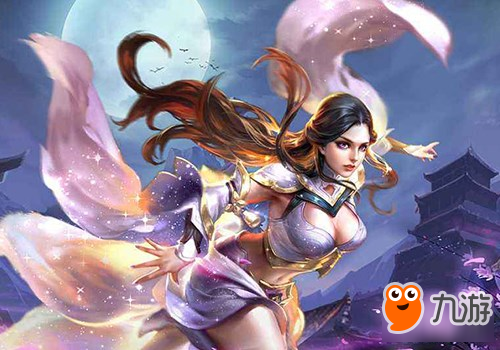
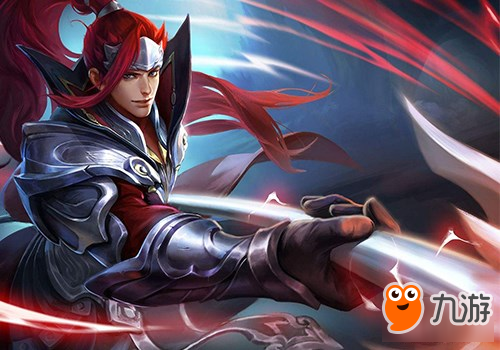
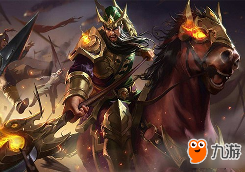
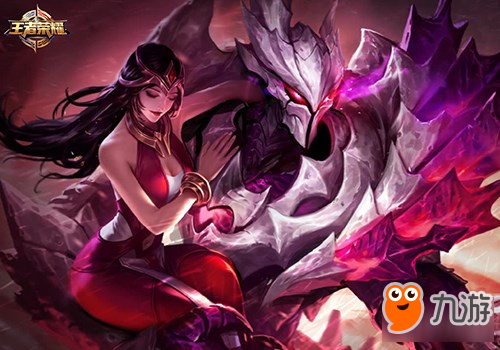

王者荣耀中有几个英雄是属于操作难度非常高，不光是需要时间来进行练习，甚至没有那个手速的话，再练习多少次在游戏里面也只是一个坑货，小编就来盘点一下那些非常考验玩家手法和意识的英雄，练习好了这些英雄，在游戏中上分，还真的是没有什么难度。
露娜：想要玩好露娜并不是123个技能瞎按就能搞定的，几百场的露娜玩家也不敢说自己会玩这个英雄，不要认为自己在匹配赛中拿到几次超神就觉得技术已经很好的。其实到了排位赛中，也会被对手吊打，现在在征召模式中，露娜虽然大部分时间都会被禁止使用。即使你使用了也要做好被5打1的准备，没有很熟练的技术就不要玩露娜，当然玩露娜只服张大仙。
韩信：韩信是一个非常考验手速和站位的英雄，不要认为自己能够熟练的使用位移技能就能够所向披靡，然而现实总是那么的残酷，每次看到梦泪的韩信之后，总也想模仿一下，结果游戏的时候总会被队友喊辣鸡，小编觉得韩信这个英雄，没有500场的实战经验，还真的很难拿出手。
关羽：这是一个一直摩擦摩擦大拇指的英雄，一场比赛下来，大拇指都没有休息过，玩得好的玩家总是能够让对手听到马蹄声闻风丧胆，然而遇到一个不会玩的玩家玩关羽，那可是千里送人头的节奏。要玩好关羽就得做好手指磨破屏幕的准备，毕竟价格也决定的关羽的强度。
干将莫邪：本赛季新上线的刺客英雄，也是拥有四个技能的英雄，四个技能的加持下，干将莫邪就是一个不是射手的射手，虽然二三技能不是走直线，但是其伤害确实爆表。再加上干将莫邪的被动技能增加伤害，犹如再加一件神装，玩好干将莫邪就是得掌握好技能的轨迹，不错过技能的释放路径，那就是能够轻松拿到人头。
